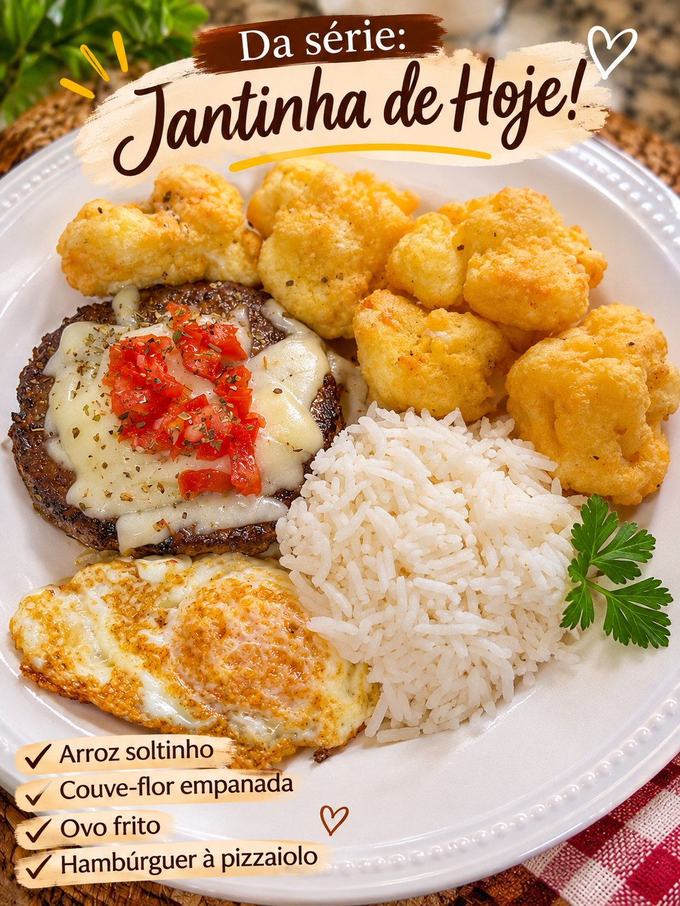

Da série Jantinha de Hoje: um prato de comida caseira, simples e delicioso. O hambúrguer à pizzaiolo ganha muçarela derretida, tomate e orégano direto na frigideira, e a couve-flor empanada fica sequinha e dourada. Para completar, arroz branco soltinho (veja os 7 erros que deixam o arroz empapado aqui no site) e um ovo frito.
Modo de preparo
Couve-flor: separe em floretes e cozinhe em água com sal até ficar levemente macia. Escorra bem.
Misture o ovo, a farinha, o leite, os temperos e o fermento até formar uma massa cremosa.
Passe os floretes na massa e frite em óleo quente até dourar. Escorra em papel-toalha.
Hambúrguer: tempere a carne com sal, alho e pimenta, modele os hambúrgueres e grelhe numa frigideira até cozinhar completamente.
Cubra com a muçarela, o tomate picado e o orégano. Tampe a frigideira até o queijo derreter.
Sirva com arroz branco soltinho e ovo frito.
Jantinha de Hoje

Da série: Jantinha de Hoje!
Dica:Escorra muito bem a couve-flor antes de empanar: com água, a massa não gruda e espirra no óleo quente.
Fez esta receita?
Conta pra gente como ficou! Deixe um comentário, mande uma foto do seu resultado
ou marque @melhores.receitas126 no seu post.
Conta pra gente como ficou! Deixe um comentário, mande uma foto do seu resultado ou marque @melhores.receitas126 no seu post.